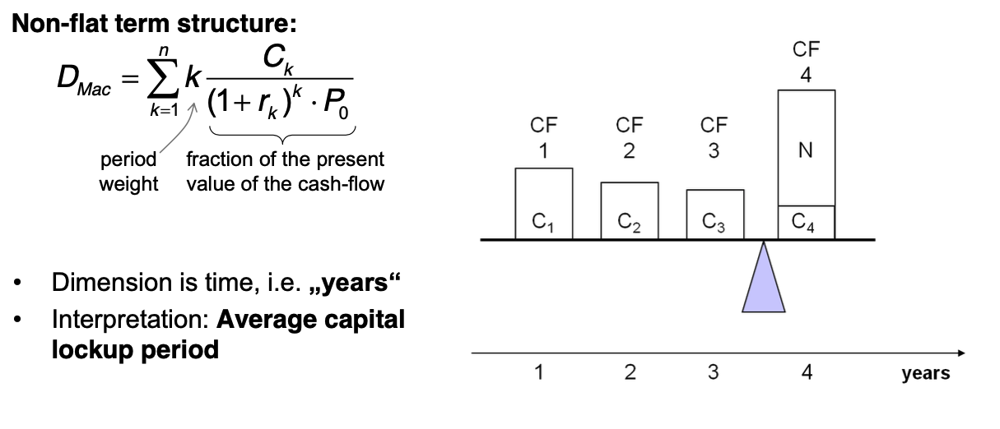

So recently I had an interview for a quantitative finance position. I completely failed the preparation as it was not at all about financial instruments but much more about econometrics.
Anyways, here the notes I did for this preparation session. I mainly prepared following these notes as I was told that one of the interviewer would be of the market risk division.
In fact, it turned out that this is a super nice team but is much more about times series and econometrics than classical market risk theory as you are being taught in University.
Cointegration:
First, all of the series must be integrated of order d (see Order of integration).
Next, if a linear combination of this collection is integrated of order less than d, then the collection is said to be co-integrated.
For integrated I (1) processes, Granger and Newbold showed that de-trending does not work to eliminate the problem of spurious correlation, and that the superior alternative is to check for co-integration.
usual procedure for testing hypotheses concerning the relationship between non-stationary variables was to run ordinary least squares (OLS) regressions on data which had been differenced. This method is biased if the non-stationary variables are cointegrated.
P-value:
In null hypothesis significance testing, the p-value is the probability of obtaining test results at least as extreme as the results actually observed, under the assumption that the null hypothesis is correct.
Goodness of Fit: it is a measure how well a statistical model fits a set of observations.
You can then use for instance information criteria, R2 for regression etc.
Regression:
is a set of statistical processes for estimating the relationships between a dependent variable (often called the 'outcome variable') and one or more independent variables (often called 'predictors', 'covariates', or 'features').
You can then have different types of regression:
Risk-neutral:
There are the three components: Risk Adverse, Risk Neutral and Risk Lover. The utility function of the investor defines his risk appetite. In finance and economics you usually assert that the investors are risk-adverse.
Then because of this it becomes difficult to price securities. However in this sense the fundamental theorem of arbitrage is helpful. This together with risk-neutrality allows to price securities in a meaningful way.
As if there is no risk in the investment, due to the fundamental theorem of asset pricing you cannot make any arbitrage, i.e. profit without taking any risk. I.e. you must earn the risk free rate. Like this you can price stuff.
At city they have the following divisions:
What is Value at Risk:
Value at Risk is defined as the percentile of a return distribution.
In the 95%-VaR you would compute the maximum loss you would get in 95% of the cases given the return distribution.
VaR can be calculated in two ways:
It does not satisfy the sub-additivity property of coherent risk measures.
The sub-additivity property says that a risk measure p it must hold
p (X) + p (Y) >= p (X + Y)
I.e. it ensures that merging positions decreases the risk.
This is not guaranteed by the VaR. So that aggregating risk does not reduce risk. On the contrary risk might be reduced by splitting positions.
I.e. even if all of your LOB satisfy VaR capital requirements, your overall business does not.
What is non-linear VaR:
Here the idea is essentially that the loss does not react in a linear way to movements of the underlying.
This often comes in the case of derivatives, where you have non-linearity in movements such as price etc. See the greeks in this sense.
The nonlinearity of certain derivatives leads to nonlinear risk exposures in the VaR of a portfolio.
Nonlinearity can be witnessed in the payoff diagram of a plain vanilla call option. The payoff diagram has a strong positive convex payoff profile before the option's expiration date, with respect to the stock price.
When the call option reaches a point where the option is in the money, it reaches a point where the payoff becomes linear. Conversely, as a call option becomes increasingly out of the money, the rate at which the option loses money decreases until the option premium is zero.
Given such complex dynamics it makes sense to calulate the VaR using Monte Carlo VaR simulations of options pricing models to estimate the VaR of the portfolio.
Challenges of calculating VaR for a mixed portfolio?
The model becomes complex as there are potentially tons of factors affecting each other. Very different channels of transmission.
We might well have models to address risk of a particular security/markets. However when having mixed portfolios it becomes difficult to calculate the VaR for the global portfolio.
This especially because the sub-additivity property is not satisfied.
GVAR (Global Vector AutoRegressive) methodology provides a general, yet practical, global modelling framework for the quantitative analysis of the relative importance of different shocks and channels of transmission mechanisms.
The individual country models are linked in a consistent manner so that the GVAR model is solved for the world as a whole.
What is the one-day VaR of a $50m portfolio with a daily standard deviation of 2% at a 95% confidence level?
The daily so it is:
VaR = 50M * 2* 0.02 = 2 Mio.
What is the annualized VaR?
Here there is time aggregation. You would need a Loss distribution model for that time horizon. If you assume i.i.d. returns then you can compute the annualized VaR as:
VaR (1-day) + sqrt (365) = VaR (1-year)
What do you know about extreme value theory:
In extreme value theory you try to model the tails of the distribution.
The issue is that for extreme events we have just a few observations. Moreover such events there is non-stationarity in the series. It is therefore impossible to treat them via times series techniques.
The idea is then to abandon times series modeling.
The idea is to say.. you have realizations with distribution F.
Then you ask what is the relation between the maximum among a series X1, …, Xn and the tails of the distribution of F?
Then the idea is to get a sequence of maximum losses Mn as defined above, normalize this and check if it converges in distribution to some distribution function H (X).
Then the idea is to create such sequences of maximum losses from the data and estimate some extreme value distribution to which it converges to. You also have to estimate the normalizing factors. You then have an estimate for the functional form of the tails (heavy tails).
Then there techniques to estimate the parameters of such extreme value distributions. See for instance Hill-estimator and Peak over Threshold.
What is Expected Shortfall?
It is the tail loss expectation. I.e. the expectation of losses over the VaR loss.
If things go bad - how bad can they get?
Why is it considered better than VaR?
It addresses the two pitfalls above. I.e. does take into account the entire tail. And is not blind from a threshold on so to say.
Moreover it fulfills sub-additivity.
Moreover it is an average. CLT and LLN apply.
Disadvantages of ES?
Backtesting more difficult.
Default risk incremental to what is calculated through the Value-at-risk model, which often does not adequately capture the risk associated with illiquid products.
Here the entire idea is that if you have a set of n-linear independent markets payoff for n-state, then you can create a risk free security out of it.
If you have a risk free security you know that its return must be the risk-free rate.
Then you know that you should not be able to earn more than the risk-free rate on it.
Then you can price any security according to such schema.
Arrow-Debreu price -> payoff 1 in one state 0 in all others.
Then with Arrow-Debreu prices you can get to the risk-neutral expected payoff and price pay-off according to the risk-free rate.
What is the discount factor? How would you calculate it?
Discount factor is the 1/ (1 + r) factor per period through which you convert the future cash flow into Present Value cash flows.
How do you calculate it?
From the Bond price. You have an equation with known cash flows and known price. Solve for the unkown variable.
This consists of risk-free rate plus risk-specific risk premium of a particular stock.
You can then subtract the risk free rate from the treasury yield curve to obtain the risk premium.
What is the riskiest part of the yield curve?
Under normal yield curve - the longer the horizon the riskier the estimate is.
Even short deviations of interest rates have a huge impact on the price on the net-present value of zero bond such that you will have a huge impact on spot rate determined from these.
What does it mean for risk when the yield curve is inverted?
The relation of spot rates rt to their respective maturities t is called the term structure of interest rates.
Spot Rate=(Face Value/Current Bond Price)(1/Years To Maturity)−1
Inverted yield curve means that future cash flow are less discounted than interest rates obtained in the next recent period.
This means that the risk and liquidity premium for cash flows obtained in recent period is higher than the one of the future.
This is seen as a precursor of an economic recession.
As a practical matter, recessions usually cause interest rates to fall.
What is duration?
The duration as a relative risk measure characterizes the relative change of the bond price due to an absolute parallel shift in the spot curve.
First derivative of bond price with respect to interest rate.
In the case of non-flat term structure. I.e. when you work with the spot rate:
The duration of a bond portfolio is the weighted sum of durations of its components (duration is linear).
What is convexity? How would you calculate it? Why is it important?
Second derivative of bond price w.r.t. interest rate.
As the bond price does not react linearly to interest rates movements but in a convex way you correct for such convex structure with convexity.
Duration + Convexity = Taylor expansion of second order.
Relation between coupon rate and convexity.
The higher the coupon rate the lower convexity.
What's the meaning of partial duration?
I think this is key-rate duration.
what are Greeks?
greeks are the partial derivative of the derivative price with respect to the model parameters movements.
Monte Carlo Methods
Estimate the price of derivatives by simulating underlying price movements. Computing payoffs and discounting these according to risk-free payoff.
Finite Difference Methods:
Numerical method for discretizing the fundamental PDE.
Analytical Methods:
For some derivative exists.
What do you know about jump processes?
These are stochastic processes that make different assumptions on the underlying price movements in comparison to the standard GBM process.
You add jumps parameters in the stochastic differential equation. Jumps are modeled by a poisson process. etc.
Should you use implied or historical volatility for estimating future volatility?
I would generally go with implied volatility. I would however first be sure that the market is liquid and there are no supply or demand imbalances driven by short term events.
See for instance the below:
The level of supply and demand, which drives implied volatility metrics, can be affected by a variety of factors ranging from market-wide events to news related directly to a single company. For example, if several Wall Street analysts make forecasts three days before a quarterly earnings report that a company will soundly beat expected earnings, implied volatility and options premiums could increase substantially in the few days preceding the report. Once the earnings are reported, implied volatility is likely to decline in the absence of a subsequent event to drive demand and volatility.
An option is at the money. How many shares of stock should you hold to hedge it?
Generally speaking, an at-the-money option usually has a delta at approximately 0.5 or -0.5. Measures the impact of a change in volatility.
This is just a rough approximation as there the option price change with respect to the fundamental is particularly convex.
What is volatility smile?
The idea is that volatility is an input variable for the BS-formula.
Implied volatility is the volatility such that the option price meets the actual observed market price.
Volatility smile shows how the implied volatility changes with strike price.
As there is no closed form solution for solving for the implied volatility you must use numerical methods to invert such function.
when does hedging increase the risk?
PREFERRED answer:
If you just delta hedge you might end up with higher risk related to the other greek letters.
Moreover note that delta hedging implies a buy high sell low trading rule.
Moreover because of many model assumptions such as instantaneous movements, local measures and model risk your hedge might in general increase the risk.
OUTDATED:
Hedging can increase your risk if you are forced to both buy short-dated options and hedge them.
idea then your option might exipire and you cannot sell or realize profit as the price did not change too much to go out of money.
How would you hedge against a particular equity/bond under current market conditions?
You can delta hedge the risk.
What is interest rate risk? What is reinvestment risk?
For investors an increase in interest rates has two effects.
If investment horizon matches the duration both effects offset each other.
Which bond has the greatest associated interest rate risk? A five year zero coupon bond? Or a five year bond that pays coupons?
a zero coupon bond. there all of the cash flow concentrated in long-horizon so that given movements in interest rates more affected due to higher discounting.
Which is more volatile, a 20-year zero coupon bond or a 20-year 4.5% coupon bond?
Answer 20-year zero coupon.
You have two options with the same underlying strike price. One has an exercise date in three months, one has an exercise date in six months. Which comes with the greatest risk?
The one six months. More uncertainty about the end-resulting price. More volatility.
What’s the maximum potential loss you could incur by selling a put on a stock?
The strike price - price of selling option (that was your payoff).
A stock is selling at $90. A 3-month call with a strike price of $100 is selling for $3.105 with a delta of 0.329. How many call contracts are required to perform a hedge on 1,000 shares of this stock? Would they be bought or sold? What happens if the price of the stock falls to $50?
Delta hedge = 1000 * 0.329
It is call option. In order to hedge it means I have to have the opposite payoff. So if market goes up I have to have negative payoff. It means you have to sell.
What happens if the price of the stock falls to $50?
You are once more not fully hedged. This because there is convexity and the price movement was too big.
What are the risks inherent in an interest rate swap?
It depends in which position are you. If you are selling the fixed component in exchange for the variable one you suffer from declining interest rates and vice versa.
How would you decide which discount curve to use to value future cash flows from interest rate swaps?
Two valuations possibilities.
Regarding 1. Vswap = Bfl - Bfix. At the next accrual period the Bfl will be valued at it's principal amount. So just compute the difference until accrual.
Given such variables I would say:
The 2008 financial crisis revealed a major gap in the inability to adequately identify the credit risk of the trading book positions
How has Babel III changed the treatment of market risk?
There was the introduction of liquidity ratios and another liquidity factor..
Introduced internationally consistent liquidity standards, a leverage constraint, and a floor requirement applied to risk‐weighted assets (RWAs).
To limit procyclicality macro-prudential regulation.
What the implications of Basel IIIs new trading book rules for market risk professionals?
they will likely have to price in the higher cost of capital for increased book.. don't know exactly the answer.. would need to collect some more practical experience on the field to answer such questions.
How could the Basel III treatment of trading books be improved?
don't have enough domain knowledge in that.
How will trading businesses change as a result of Basel III capital rules for banks’ trading books?
not have enough domain knowledge in this.
Changes in Basel III
Banks no longer have the option to use the advanced IRB approach for certain asset classes. The advanced IRB approach allows banks to estimate PD and EAD in certain scenarios, particularly when there are insufficient data to model an exposure in precise terms. Instead, they are now required to use the Foundation IRB approach which introduces fixed values for the LGD and EAD.
Will come into action in the coming years. Major thing is the change from VaR to Expected Shortfall.